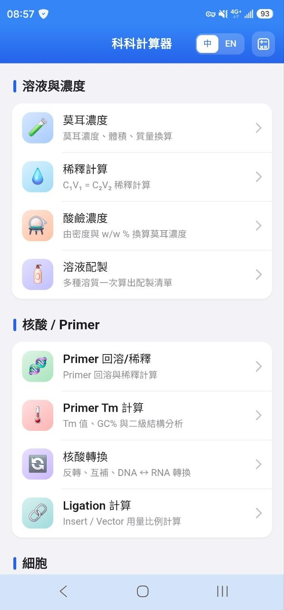
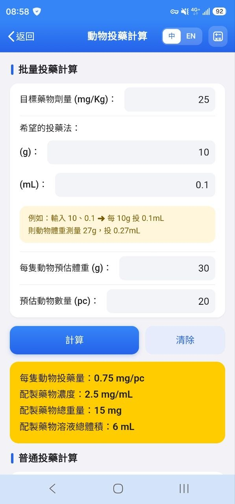
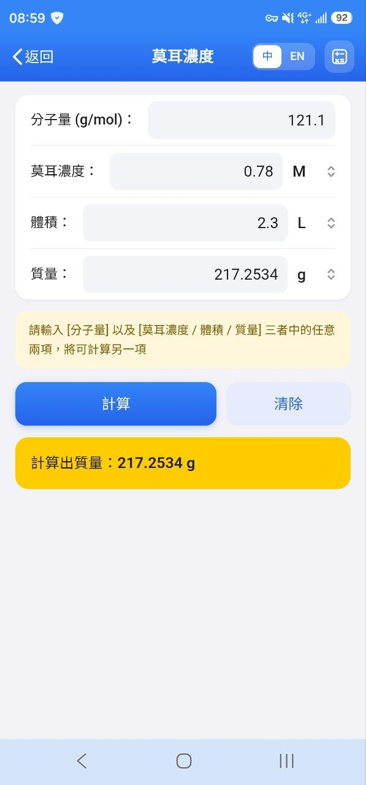
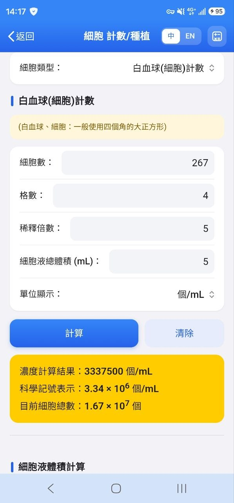

Bench實驗桌前的隨身神器
科科計算器 BioCalculator
🧫
專為生命科學、生化分生、細胞房與動物實驗設計的超貼心幫算隊友！
無跳出廣告干擾、
100% 完全離線、
15+ 常用實驗算式一鍵搞定 ✨
【重要封測任務 ⭐ 請保留安裝 14 天不解除】
依據 Google Play 官方最新個人開發者發布規範，需有至少 20 位測試夥伴連續安裝達 14 天 方能正式審核上架。
搶先看 App 介面截圖
簡潔大字體、清晰卡片分組，戴手套也能輕鬆點選




為什麼實驗室夥伴都需要它？
杜絕繁複手算與查表失誤，把寶貴時間留給專注實驗
100% 離線運作
無塵室、地下室暗房或深層低溫冷房訊號弱也不怕。完全不耗手機流量，隨開即算。
純淨無廣告干擾
戴著手套操作時，最怕誤觸煩人的全螢幕彈跳廣告！介面乾淨純粹，計算絕不分心。
繁中 / 英文一鍵切換
支援繁體中文與流暢英文，便於跨國實驗室、外籍研究生或國際生交流使用。
15 項核心實驗計算
Molarity 莫耳濃度、C1V1 稀釋、PCR 引子回溶與 Tm 計算、血球計數盤、SDS 鑄膠及動物投藥劑量全方位整合。
Android 封測安裝 3 步驟
請務必嚴格依順序：第 1 ➜ 第 2 ➜ 第 3 步 操作！
加入測試者群組 (Google Groups)
此步驟最為關鍵！點擊下方群組連結並登入您的 Google 帳號，按「加入群組」。加入後才擁有 Google Play 的封測白名單資格。
點擊「成為測試人員」 (Web Opt-in)
加入群組後，點進此連結開啟測試計畫頁面，點選畫面中的「成為測試人員 (BECOME A TESTER)」按鈕確認參與資格。
前往 Google Play 商店安裝
完成上述授權後，即可前往 Google Play 商店專屬封測頁面直接下載並安裝 App！
若此步驟開啟顯示「找不到應用程式」，通常為 Google 伺服器群組權限同步延遲。
👉 請先確認前兩步已順利完成，並稍等幾分鐘至數小時再次點開即可正常進入商店下載！
歡迎隨時回報 Bug 或新增計算算式
您在實驗室中最常遇到哪些手算痛點？若有任何算式誤差、操作不順手或想要增加的功能，隨時歡迎直接回報與建議，我們一起把工具打磨到最好！